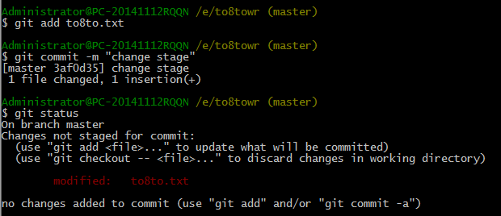

管理修改
下面，我们要讨论的就是，为什么Git比其他版本控制系统设计得优秀，因为Git跟踪并管理的是修改，而非文件。前提是你已经掌握了暂存区的概念。
什么是修改？比如你新增了一行，这就是一个修改，删除了一行，也是一个修改，更改了某些字符，也是一个修改，删了一些又加了一些，也是一个修改，甚至创建一个新文件，也算一个修改。
为什么说Git管理的是修改，而不是文件呢？我们还是做实验。第一步，对to8to.txt做一个修改，比如加一行内容，如下：
Git is a distributed version control system.
Git is free software distributed under the GPL.
Git has a mutable index called stage.
Git tracks changes.
这次的修改我们不添加了，然后直接提交 $ git commit –m “change stage”，然后 $ git status 查看
第二次的修改没有被提交，别急，我们往上缕一缕：
第一次修改 → git add → 第二次修改 → git commit
你看，我们前面讲了，Git管理的是修改，当你用git add命令后，在工作区的第一次修改被放入暂存区，准备提交，但是，在工作区的第二次修改并没有放入暂存区，所以，git commit只负责把暂存区的修改提交了，也就是第一次的修改被提交了，第二次的修改不会被提交。
提交后，我们用 $ git diff HEAD -- to8to.txt 命令可以查看工作区和版本库里面最新版本的区别：
可见，第二次修改确实没有被提交
那怎么提交第二次修改呢？你可以git add继续再git commit，也可以别着急提交第一次修改，先git add第二次修改，再git commit，就相当于把两次修改合并后一块提交了：
第一次修改 -> git add -> 第二次修改 -> git add -> git commit
好，现在，把第二次修改提交,自己操作。
小结：
$ git diff HEAD -- to8to.txt 命令可以查看工作区和版本库里面最新版本的区别
现在，你又理解了Git是如何跟踪修改的，每次修改，如果不add到暂存区，那就不会加入到commit中。